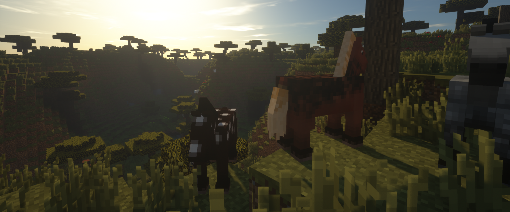

ModCreatorALPHAとは？
ModCreatorとは、Javaの分からない人でもMinecraft Forge用のMODが作れるツールです。
このツールの利用にはJavaの知識を一切必要としません。必要なのは想像力だけです。
様々なプラットフォームで動く
ModCreatorはJavaで書かれたソフトです。
Javaに対応しているOSであればModCreatorを使うことが出来ます。
✓Windows
✓Mac
✓Linux
代表的な3つのOSに対応
MCreatorとModCreator
ModCreatorはMCreatorとは全くの別物です。
ですがMCreatorがライバルというわけではありません。ModCreator作者はMCreatorを尊敬しています。
MCreatorとの機能比較
| 機能 | ModCreator | MCreator |
|---|
| 複数OS対応 | ✓ | ✓ |
|---|
| 複数MCバージョン対応 | 1.7.10のみ | ✓ |
|---|
| レシピ追加 | ✓ | ✓ |
|---|
| ブロック追加 | - | ✓ |
|---|
| アイテム追加 | ✓ | ✓ |
|---|
| その他の追加 | - | ✓ |
|---|
| レシピ追加のやりやすさ | - | ✓ |
|---|
| MODのテスト | ✓ | ✓ |
|---|
| MOD出力の速度 | - | - |
|---|
| ソフトの速度 | ✓ | - |
|---|
| MCの速度 | - | - |
|---|
| Forgeセットアップの速度 | ✓ | - |
|---|
| ソースコードの書き換え | - | ✓ |
|---|
| テクスチャの用意のしやすさ | - | ✓ |
|---|
| アカウントが不要か | ✓ | - |
|---|
| 一つのソフトで複数のMOD製作 | ✓ | 最大5個 |
|---|
| 言語 | 日本語 | 英語 |
|---|
FAQ
Q:ModCreatorが起動できません。
A:Java8以上のバージョンのJavaをインストールしてください。
Q:JDKは必要ですか？
A:はい、必要です。JAVA_HOMEのパスも通しておいてください。
ですが将来JDKの自動インストール機能を作る予定です。
Q:完全に無料ですか？
A:はい、完全に無料です。
DOWNLOAD ModCreatorALPHA
これからのModCreator
アイテム・ブロック・ツールの追加に対応
MC1.7.10～MC1.12.2まで対応